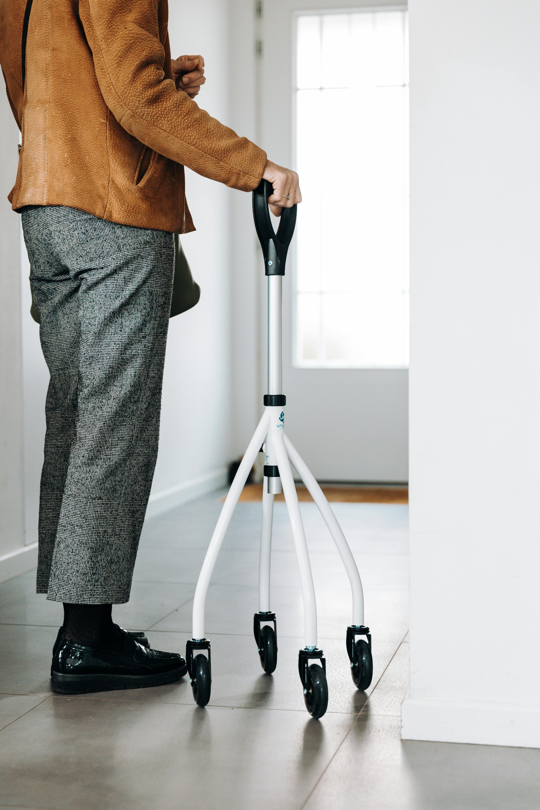

Safety and Independence for Seniors
Community Safety Seminar
St. Bernards Medical Center
Dr. Abhijit Shivkumar
March 18
Why This Conversation Matters
- Independence matters at every age
- Small habits can prevent injury
- Safety helps protect quality of life
Two Key Areas of Safety
Medication Safety
Bottom line: Small adjustments can make a big difference
Why Driving Risk Changes With Age
Vision changes & night glare
Slower reaction time
Reduced neck & joint mobility
Medications can affect alertness
Smart Driving Habits
- Drive during daylight when possible
- Avoid heavy traffic or bad weather
- Keep greater following distance
- Plan familiar routes
Warning Signs While Driving
- Getting lost on familiar routes
- Delayed reaction to traffic signals
- Difficulty checking blind spots
- Family expressing concern about driving
Vehicle Safety Matters
Seat Belts
Every trip, every seat. Keep the belt firm, flat, and low.
Use Safety Features
Practice with backup cameras, parking alerts, and warning lights before you need them.
Clear Visibility
Keep the windshield, mirrors, and lights clean for safer driving day and night.
Tires & Brakes
Routine checks help catch problems early and make stopping more reliable.
Driving With ABS and Stability Control
ABS
- Brake firmly
- Keep steering
- Do not pump the brakes
Electronic Stability Control
- Look where you want the car to go
- Make smooth steering corrections
- Let the system help if the car starts to skid
What Not To Assume
- They do not overcome speed
- They do not replace safe following distance
- They still depend on good tires and calm driving
Stay calm, slow down early, brake firmly with ABS, and steer smoothly where you want the car to go.
Footnote: ABS was required on new passenger cars starting September 1, 2000. Electronic stability control was required on new light vehicles by model year 2012.
Health and Driving
Vision
Night glare, reduced contrast, and slower adjustment to darkness can make driving harder.
Mobility
Arthritis, neck stiffness, or pain can make turning, checking blind spots, and braking less comfortable.
Thinking Speed
Slower reaction time or memory changes can affect quick decisions in traffic.
Medicines Matter
Drowsiness, dizziness, and slowed alertness from medications can affect both driving and fall risk.
Regular checkups and medication review help people stay independent and drive more safely for longer.
Medications and Driving
What Can Happen
Drowsiness, dizziness, blurred vision, and slower reaction time can make driving less safe.
Higher-Risk Medicines
Sleep aids, pain medications, anxiety medicines, and some allergy pills are common examples.
When Risk Is Higher
Side effects are often worse after starting a new medicine, changing the dose, or combining medications.
Medication safety is also driving safety. Know how your medicines affect you before getting behind the wheel.
Medication Safety
The right medicine helps. The wrong mix can cause harm.
Polypharmacy!
What Can Go Wrong?
Wrong Dose
Duplicate Medicines
Drug Interactions
Side Effects
Best protection: know your medicines by name and what they are for, or at least be able to identify them and keep an updated medication list.
Higher-Risk Medicines
Sleep medicines
Opioid pain medicines and anxiety medicines
Blood pressure medicines when they cause dizziness or lightheadedness
Not every medicine is unsafe, but these deserve extra attention when thinking about falls, confusion, and driving.
Medications and Falls
Drowsy
Dizzy
Low Blood Pressure
Confused
Medicines can turn a small imbalance into a major fall.

Bring Every Bottle
1
Bring Them In
Prescription bottles, over-the-counter medicines, vitamins, and supplements
2
Review With One Team
Doctor, pharmacist, or both
3
Leave With A Safer Plan
Know what each medicine is for, what to watch for, and what may no longer be needed
What is it for?
What should I watch for?
Can it affect driving or balance?